此处仅供未激活 Quicksight 服务的客户第一次参考使用，已经激活的客户，请选择新加坡区域即可。
如果是第一次使用，需要先启用 Quicksight 服务 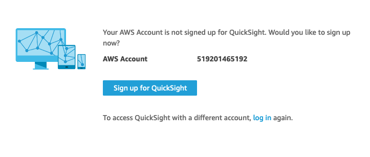
选择企业版并继续 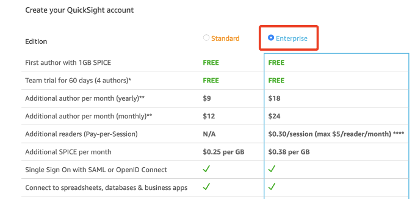
选择新加坡区域，以及对应的账号名字，接受提醒的邮箱地址等 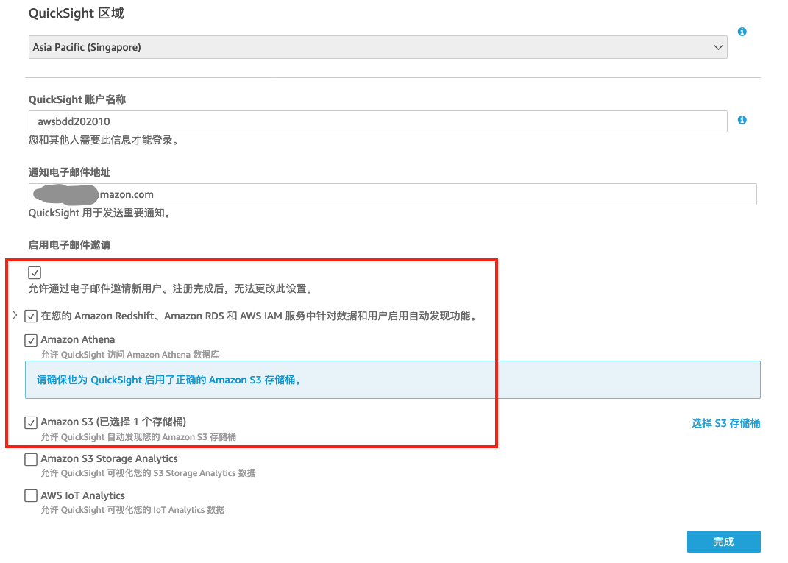
必须勾选Athena和S3支持，当选择S3支持的时候，在弹出的窗口中把对应的桶选上（此处的S3桶仅供参考，请以实际的数据为准） 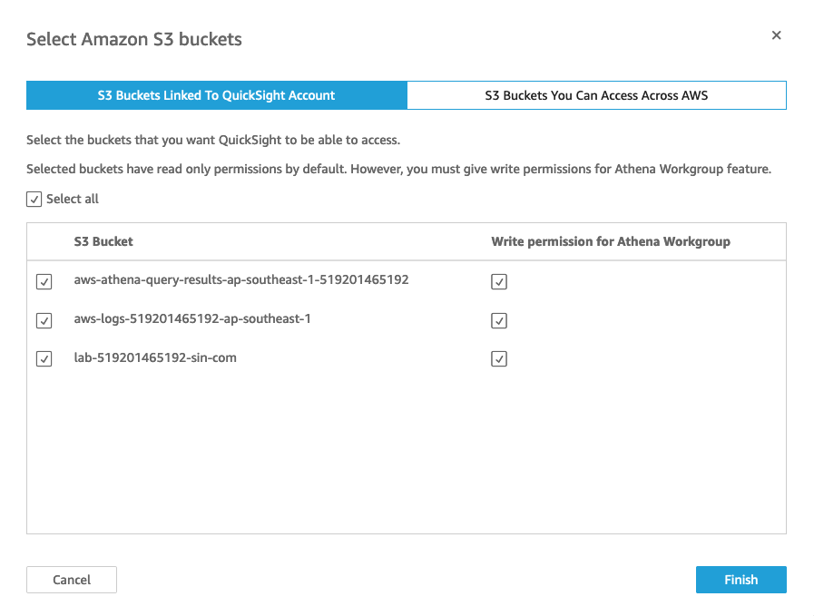
进入Quicksight控制台界面，点击左侧数据集，选择创建“新数据集” 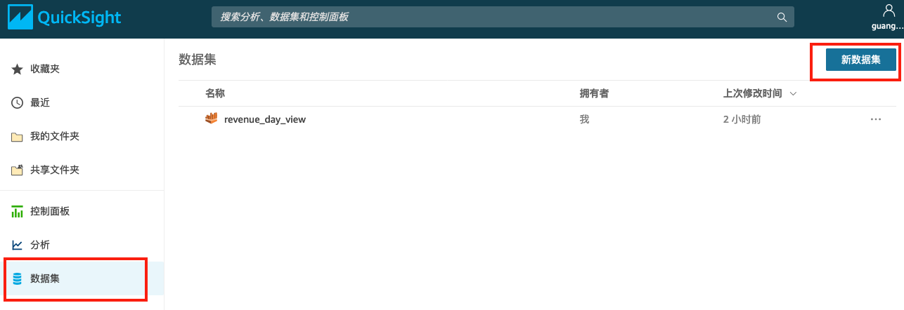
选择Redshift（自动发现）数据集，Redshift也有手动连接的方式，不过此处我们不演示 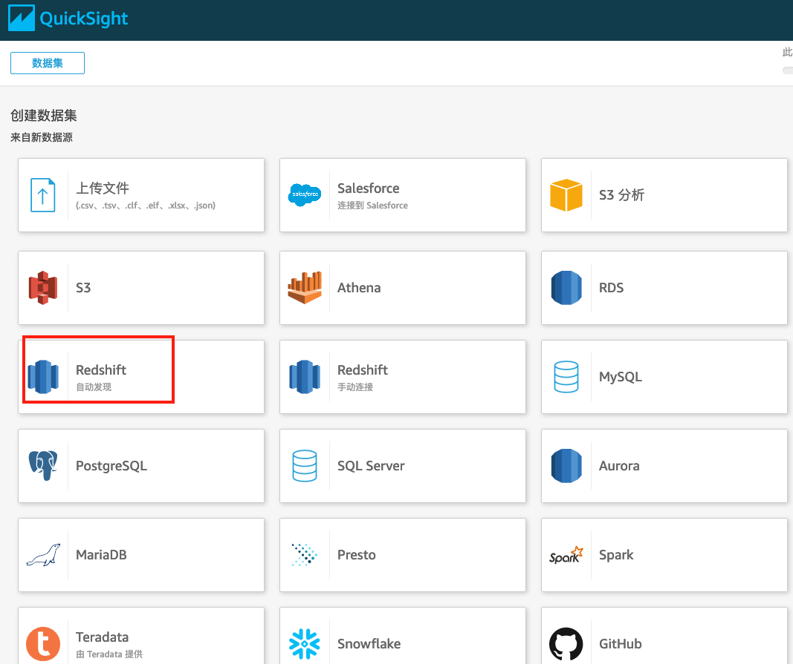
输入连接参数，选择“创建data source”，选择对应的Redshift数据库，注意配置对应的地址，端口，数据库名称，用户名和密码 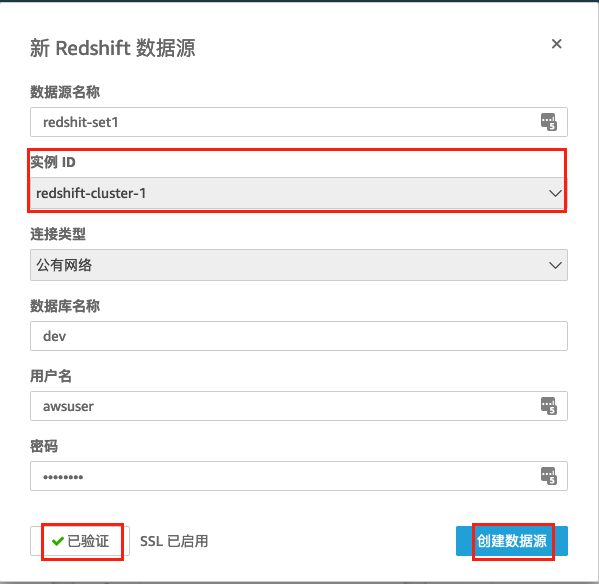
选择Table1，点击“Select”,最后点击“Virtualize”完成创建数据集（此处我们选择把数据从Redshift导入到Quicksigh里面来，这样分析起来速度会快很多）
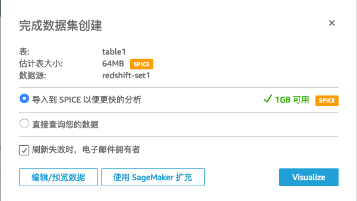
打开可视化对象窗口，选择展现方式为“竖条状图“ 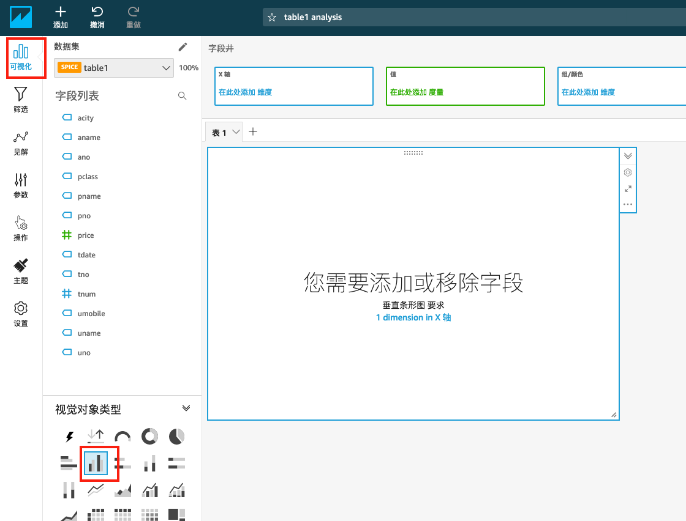
将 tdate 拖放到 X轴 栏，将 tnum 拖动到 值 栏（系统会自动选择计数）
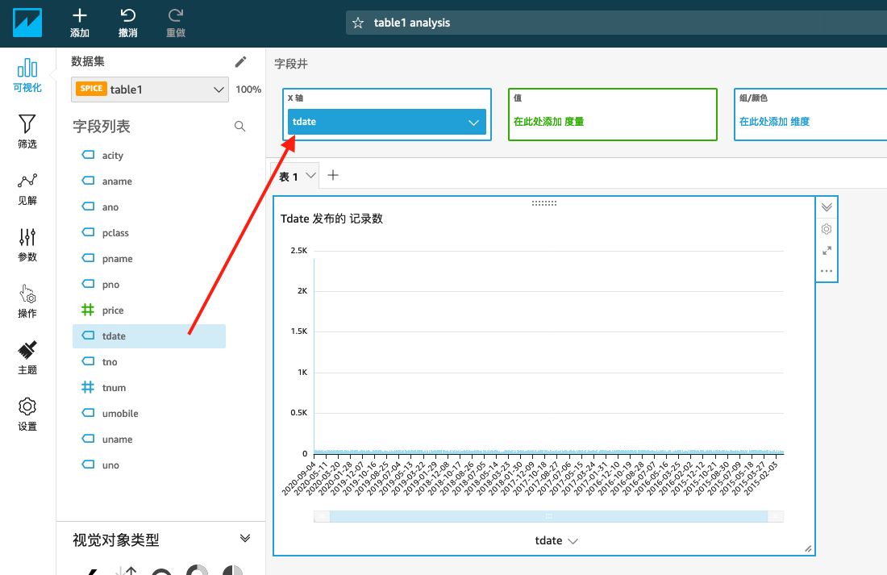
和 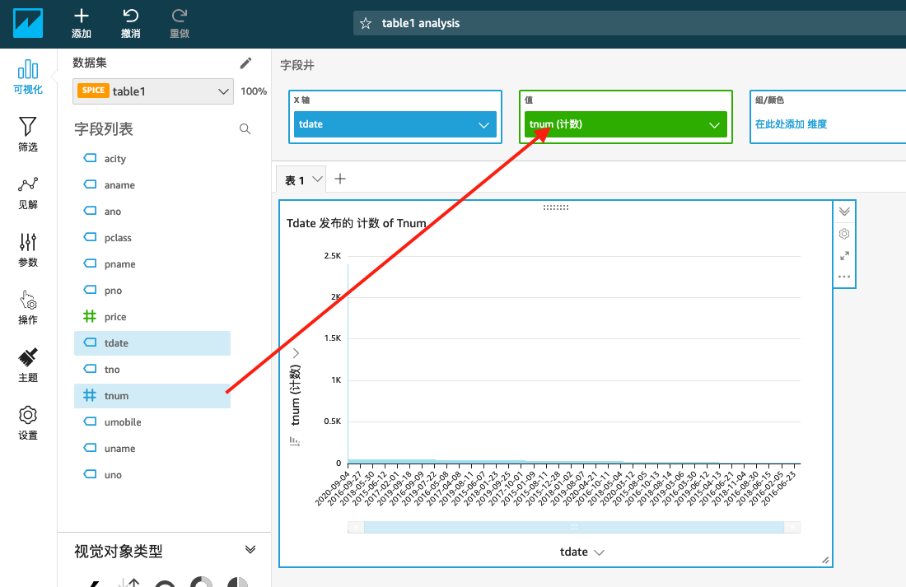
这样就完成了“以日期为X轴，以当天的总销售数量为Y轴从高到低的排名”展现。
恭喜您完成本实验所有内容！
~完~